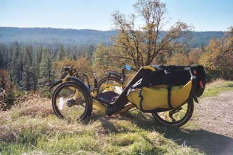
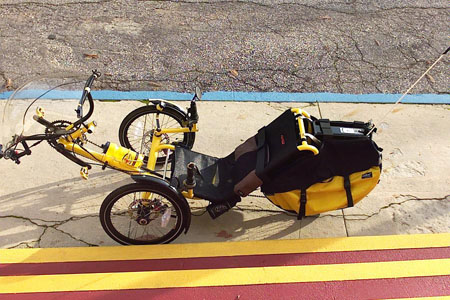
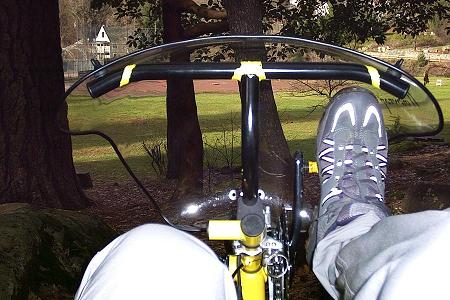
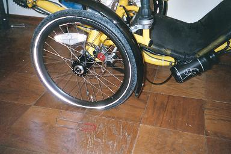

commuting
I commute 9 miles to work.
I do it on the trike at least twice a week. Other times I
drive. I like the feeling of being oil-independent, though, when
I'm on the trike. My commute is rather hilly. My biggest
climb,
Coyote Street, is a 300 foot vertical
gain.

Rest stop on Coyote. This
picture was taken the day I forgot
my flag, of course. Catrike lists the pocket at 27 pounds,
without pedals.
Accessorized with fenders, the Old Man Mountain rack, Radical panniers,
NiteRider lights (minus the battery), Candy C pedals, 2 mirrors, 2
bottle cages, and an inflatable lumbar pillow, the trike weighs in at
36
pounds (unloaded, no fairing).

55 lb, loaded
Loaded for the normal winter commute - add NiteRider battery, water,
tools, work clothes, and fairing.
A 27.5 lb trike? with 27.5 lb of stuff on it?!!!
The fairing is supposed to keep
me warmer and drier than I would be without it. I think it does a
good job. I've ridden in the cold and rain, and my feet have
never been cold (or wet), that's for sure.

The commute is mostly a very mellow part of my day. The
long, slow sections are very relaxing, mentally. The brain is not
occupied with staying balanced, and is free to wander. Yet the
descents are exhilarating. The combination of mental relaxation,
physical exertion, and pure adrenaline seems to stimulate poetic
aspirations. I keep a tiny voice recorder handy to capture the
spew.
The very first time I rode the trike, I located the world's best
Kevlar-belt-puncturing device (pictured beside the flat tire; note the
sharpened ends bent up vertically):

{kind=link}